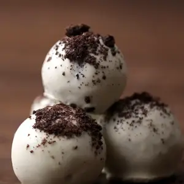

Ingredients
|
36 chocolate sandwich cookies |
|
8 oz cream cheese, softened |
|
12 oz white chocolate, melted |
|
Preperation
| 1. |
In a food processor, finely crush the
cookies, reserving about 2 tablespoons
of the mixture for sprinkling on top of the truffles. |
| 2. |
In a large bowl, combine the cookie crumbs
and cream cheese, stirring until evenly mixed.
Chill the mixture for about an hour or until it
can be rolled into a ball and hold its shape. |
| 3. |
Divide and roll the mixture into golf
ball-sized balls. Dip the truffles in the
melted white chocolate and place on a baking
sheet lined with parchment paper. Sprinkle the
reserved cookie crumbs on top of the truffles
before the chocolate hardens. |
| 4. |
Enjoy! |

|